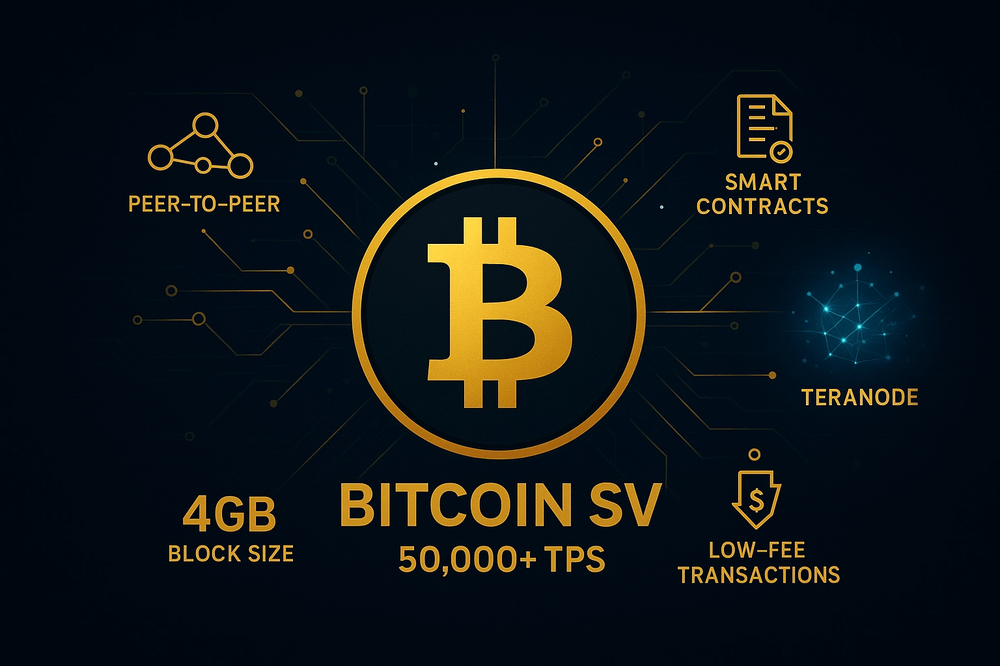
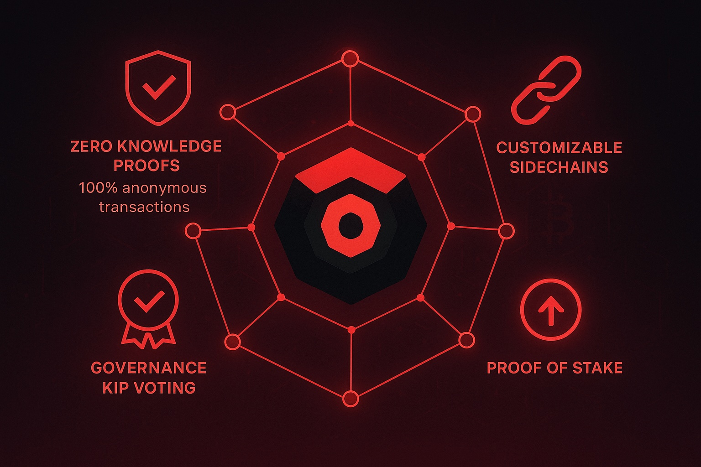

Bitcoin SV Price Prediction for End of 2025: In-Depth Analysis and Insights
The information in this article is provided for educational purposes only and is not investment advice. Cryptocurrency investments carry risks.
Introduction
As of August 21, 2025, 12:32 AM EEST, Bitcoin SV (BSV) is trading at approximately $35.78, positioning itself as a cryptocurrency focused on scalability and low-cost transactions through its large block size of 128 MB. Emerging from a 2018 hard fork of Bitcoin Cash (BCH), Bitcoin SV aims to adhere to Satoshi Nakamoto’s original vision for Bitcoin as a peer-to-peer electronic cash system. Despite its technical strengths, BSV faces challenges due to controversies, including Craig Wright’s claims and declining hashrate. This article provides a detailed analysis of BSV’s price outlook for the end of 2025, exploring bullish and bearish scenarios, key growth drivers, and risks based on market trends and technical analysis.
Current Situation
Bitcoin SV is currently priced at $35.78, with a market cap of $709.73 million, ranking it #128 on CoinMarketCap. Over the past 24 hours, BSV has decreased by 2.86%, and over the past week, it has remained relatively flat with a 0% change. The past 30 days show 14 green days (47%) with a volatility of 10.88%. The Fear and Greed Index at 66 (Greed) reflects cautious optimism in the market. Since the start of 2025, BSV has declined by 30% from $51.07, underperforming compared to Bitcoin’s 49.19% gain. BSV is 92.69% below its all-time high of $489.75 from April 2021, with a circulating supply of 19.87 million out of a maximum of 21 million coins.
Price Predictions for End of 2025
Analyst forecasts for Bitcoin SV by December 2025 vary significantly due to its volatile history and market positioning. Below are the key projections based on available data:
- Bearish Scenario: Some analysts predict BSV could drop to $0–$20.53, particularly if market sentiment remains bearish or regulatory pressures intensify, as forecasted by WalletInvestor and TradingBeast.
- Moderate Scenario: Projections suggest BSV trading between $36.65 and $49.71, supported by its scalability features and niche adoption, according to CoinPriceForecast and 3Commas.
- Bullish Scenario: Optimistic forecasts estimate BSV reaching $99.48–$200, driven by increased enterprise adoption and a potential market rally in early 2025, as predicted by Mitrade, CCN, and DigitalCoinPrice.
Reaching $500 or surpassing its all-time high of $489.75 is considered unlikely by 2025 due to market cap requirements (approximately $10 billion) and current bearish technicals. Most analysts project a range of $36–$117, with an average around $86.
Factors Driving Price Growth
- Scalability: BSV’s 128 MB block size enables high transaction throughput, making it attractive for enterprise-level applications like supply chain management and payments.
- Enterprise Adoption: Potential partnerships with businesses leveraging BSV’s low-cost, high-volume transactions could drive demand.
- Market Rally: A projected cryptocurrency market surge from February to April 2025 could lift BSV’s price, especially if Bitcoin’s dominance declines, favoring altcoins.
- Proof-of-Work Security: BSV’s adherence to Bitcoin’s original Proof-of-Work (PoW) consensus provides stability and security, appealing to traditionalists.
Risks and Downward Factors
- Market Volatility: A projected 30–40% market correction in early 2025 could push BSV’s price lower, especially given its high volatility of 10.88%.
- Controversies: Craig Wright’s claims to be Satoshi Nakamoto and related legal battles damage BSV’s credibility and investor confidence.
- Declining Hashrate: Falling mining activity reduces network security and attractiveness to miners, impacting price stability.
- Competition: BSV faces strong competition from Bitcoin, Ethereum, and other scalable blockchains, limiting its market share.
- Bearish Technicals: A descending channel pattern and falling 200-day moving average since August 16, 2025, signal short-term weakness.
Volatility Analysis
From July to August 2025, BSV’s price rose from $30.75 to $35.78, a 16.35% gain, but with a high volatility of 10.88%. Technical indicators show a bearish trend, with a descending channel pattern and a falling 200-day moving average since August 16, 2025. The Relative Strength Index (RSI) at 65 indicates potential for growth but also overbought conditions. BSV’s price action mirrors Bitcoin and Ethereum, suggesting correlation with broader market trends. A projected market recovery in early 2025 could support moderate growth, but controversies and competition may cap significant upside unless adoption accelerates.
Conclusion
By the end of 2025, Bitcoin SV’s price is projected to range between $36.65 and $117, with a potential high of $200 in a bullish scenario driven by enterprise adoption and a market rally. However, bearish risks, including controversies, declining hashrate, and competition, could push prices as low as $0–$20.53. Investors should exercise caution, conduct thorough research, and manage risks due to BSV’s volatility and market challenges. The likelihood of reaching $500 or its all-time high is low without significant ecosystem breakthroughs.